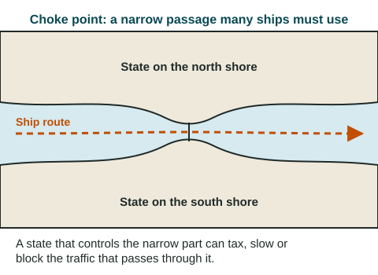

Political power is control: over people, over land, over resources such as oil and fish, and over the routes that connect places. This topic looks at how people and states claim space, and at three kinds of places where power is easy to see: former colonies, narrow sea passages and regions caught between strong outside powers.
Territoriality: claiming space
Territoriality is the attempt by a person, a group or a state to influence or control people and things by claiming control over an area. It ties people, their culture and their economy to a piece of land. You can see it at every scale:
- Local scale: a farmer fences a field and posts a "keep out" sign; a city puts up "Welcome to" signs at its edge.
- National scale: a state builds border posts, checks passports and patrols its borders.
- Global scale: states race to claim the seabed under the Arctic Ocean. In 2007, a Russian mission placed a metal flag on the seabed under the North Pole, while Canada and Denmark also claim parts of the same seabed.
Three words sound alike, and the readers who score the exam report that students mix them up. Keep them apart:
| Word | What it is | Example |
|---|---|---|
| Territory | The area itself, land or sea | The land and coastal waters of Egypt |
| Territoriality | The behavior of claiming and marking control of an area | The 2007 flag on the Arctic seabed |
| Sovereignty | A state's recognized right to rule its territory without outside control | Egypt deciding which ships may use its canal |
A flag does not create sovereignty. Who controls the Arctic seabed is being settled through rules that states have agreed to, not by symbols.
Neocolonialism: control without rule
When colonies became independent, the old powers lost direct rule, but some influence stayed. Neocolonialism is the use of economic or political pressure, such as loans with conditions, control of a currency or ownership of mines, by powerful states or companies to influence former colonies without ruling them directly. A debated example: as of 2026, many states in West and Central Africa use the CFA franc, a currency created under French colonial rule and still backed by France's treasury. Critics call this neocolonial because France long had a say in how it was run; supporters say it keeps prices stable, and reforms announced in 2019 for the West African CFA franc reduced France's role there. A strong answer on the exam attributes such views ("critics argue") instead of stating them as fact.
Choke points: narrow passages, wide power

A choke point is a narrow passage on a major route that many ships must use. Whoever controls it can charge fees, inspect ships, slow traffic or, in a crisis, block it. Seven important ones, at the global scale:
- The Panama Canal links the Atlantic and Pacific Oceans across Panama.
- The Strait of Gibraltar joins the Atlantic to the Mediterranean Sea, between Spain and Morocco.
- The Suez Canal, run by Egypt, joins the Mediterranean to the Red Sea, the shortest sea route between Asia and Europe.
- The Bosporus, at Istanbul in Türkiye, joins the Black Sea to the Sea of Marmara; with the Dardanelles, it is the only sea link between the Black Sea and the Mediterranean.
- The Bab el-Mandeb, between Yemen and Djibouti, is the southern entrance to the Red Sea, on the way to Suez.
- The Strait of Hormuz, between Iran and Oman, is the only sea route out of the Persian Gulf (called the Arabian Gulf in many Arab states), where much of the world's exported oil is shipped.
- The Strait of Malacca, between Malaysia and the Indonesian island of Sumatra, links the Indian Ocean to East Asia.
How much one passage matters became clear in March 2021, when a container ship ran aground in the Suez Canal and blocked it for six days. Hundreds of ships waited, and some sailed around southern Africa instead, adding about two weeks to the trip.
Shatterbelts: caught in the middle
A shatterbelt is a region caught between stronger outside powers, often divided inside by language, religion or politics, where conflict is common. Outside powers compete for influence there, and local disputes can turn into wider wars. Eastern Europe during the Cold War (about 1947 to 1991), pulled between the Soviet Union and the United States and its Western European allies, is a common example. The Balkans in the early 1900s is another. At the regional scale, a shatterbelt is the opposite of a stable block of states: its borders and alliances change often.